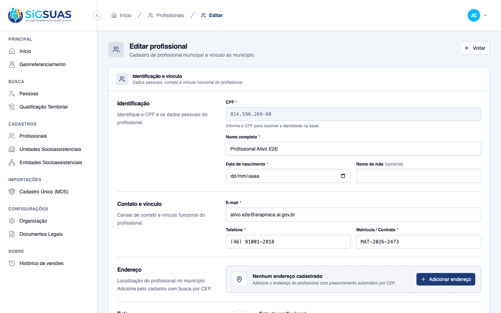
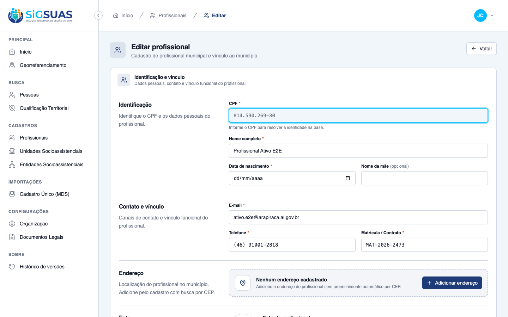
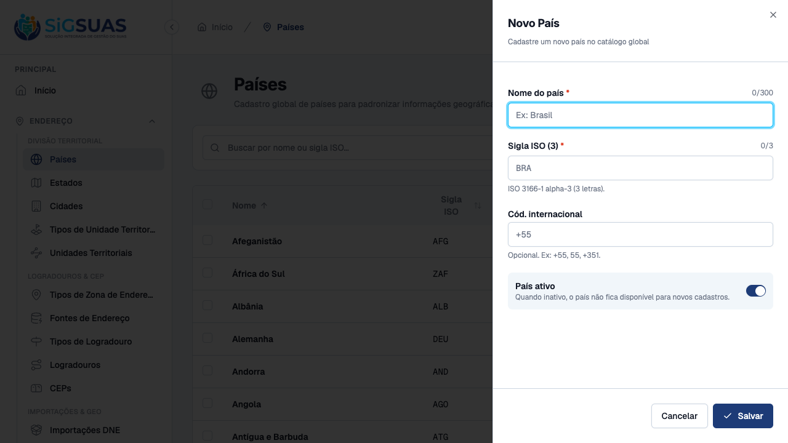
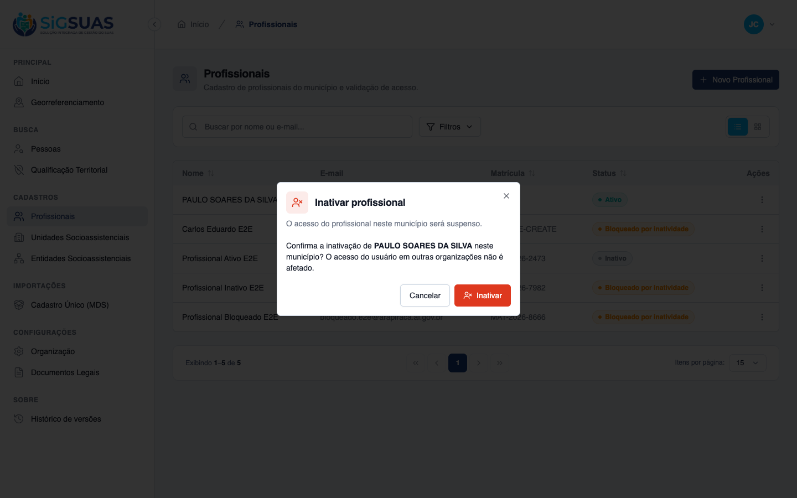
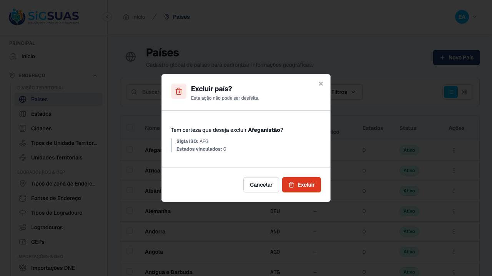
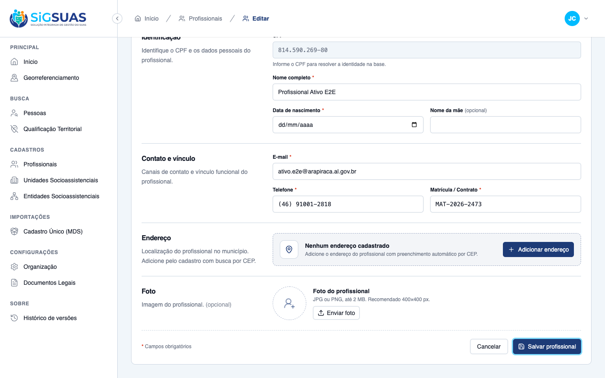
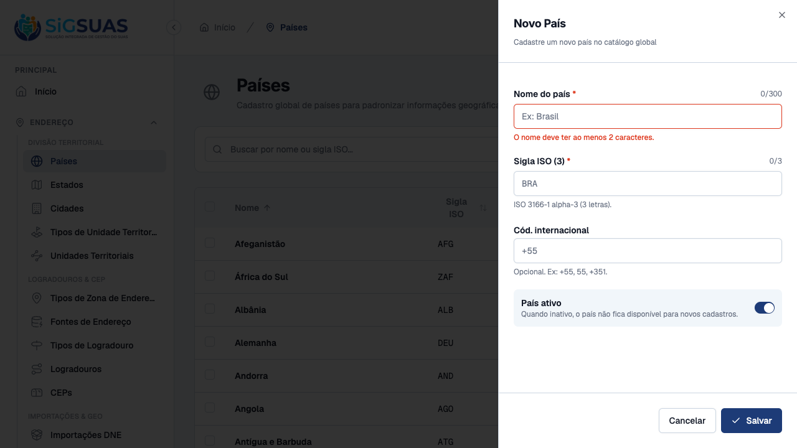

Relatório de Critérios de Aceite — HU #10136
Resumo
6 critérios de aceite (CA01–CA06). Feature sem back-end: puramente de componentes Vue/Tailwind compartilhados entre admin/ e client/. CA01, CA02, CA04 e CA05 evidenciados por navegador (screenshots + inspeção de atributos/classes reais renderizadas); CA03 evidenciado por navegador + pela suíte automatizada 'npm run audit:ui' (zero desvios em ambos os repos); CA06 evidenciado injetando propositalmente um desvio real num arquivo temporário e descartável, provando que o script detecta e reporta 'arquivo:linha' — o arquivo foi removido logo em seguida e 'git status' confirmou que nada ficou pendente. Resultado geral: todos os 6 CAs atendidos.
| CA | Critério | Status |
|---|---|---|
| CA01 | Campo somente leitura é inequívoco | ATENDIDO · navegador |
| CA02 | Somente leitura não engana o teclado | ATENDIDO · navegador |
| CA03 | Botões primários uniformes | ATENDIDO · navegador + automatizado |
| CA04 | Ação destrutiva nunca compete com a primária | ATENDIDO · navegador |
| CA05 | Foco visível e idêntico entre Admin e Client | ATENDIDO · navegador |
| CA06 | Desvio é detectável (caminho de erro) | ATENDIDO · automatizado |
CA01 — Campo somente leitura é inequívoco ATENDIDO · navegador
Critério (Gherkin): Dado um prontuário aberto em modo consulta Quando inspeciono um campo somente leitura Então ele usa o mesmo par de tokens (fundo/texto) em todas as telas do módulo E carrega o atributo `readonly` (ou `aria-readonly="true"`) E é anunciado como somente leitura por leitor de tela
Como foi testado: No client, login como master (15543849079) → tenant Fortaleza → /app/cadastros/profissionais-municipais/:uuid/editar (edição de um profissional municipal já cadastrado). O campo CPF usa :readonly="isEdit" em ProfissionalMunicipalFormPage.vue:390, delegado ao componente-base Input.vue (RN02/RN03 da spec). Inspecionado via page.evaluate no elemento real (não apenas a árvore de acessibilidade) para capturar os atributos DOM que o leitor de tela consome.
- Atributo nativo <code>readOnly = true</code> no elemento <input> (confirmado via eval, ver <code>ca01-cpf-a11y-attrs.json</code>).
- <code>aria-readonly="true"</code> injetado automaticamente pelo componente — o atributo é exatamente o que leitores de tela (NVDA/JAWS/VoiceOver) usam para anunciar 'somente leitura', sem que a tela precise declará-lo (RN03).
- Classe computada do elemento inclui <code>read-only:bg-muted read-only:text-muted-foreground read-only:cursor-default read-only:caret-transparent read-only:shadow-none</code> — o mesmo par de tokens fundo/texto vem do componente <code>Input.vue</code>, não colado na tela (RN02).
- Visualmente o campo CPF aparece com fundo/texto acinzentados (muted), distinto dos demais campos editáveis da mesma tela (ver screenshot).
- Árvore de acessibilidade completa da tela salva em <code>ca01-accessibility-snapshot.yml</code> para referência (o snapshot ARIA do playwright-cli não expõe 'readonly' como rótulo textual — por isso a evidência primária desta CA é a leitura direta dos atributos DOM/ARIA reais em <code>ca01-cpf-a11y-attrs.json</code>, que é o dado que efetivamente chega ao leitor de tela).

CA02 — Somente leitura não engana o teclado ATENDIDO · navegador
Critério (Gherkin): Dado o mesmo campo Quando navego por Tab Então ele é focável (para leitura) mas não aceita digitação E não exibe cursor de texto piscando, que sinalizaria edição possível
Como foi testado: No mesmo campo CPF (readonly, tela de edição de profissional municipal): clique para focar (equivalente a alcançar o campo por Tab), confirmado via document.activeElement === el → true. Em seguida, tentativa de digitação de 9 dígitos (page.keyboard.type('999999999')) diretamente no campo focado.
- Campo é focável: <code>document.activeElement</code> aponta para o elemento após o clique/Tab.
- Valor do campo permanece inalterado após a tentativa de digitação: <code>814.590.269-80</code> antes e depois (confirmado por leitura de <code>el.value</code>) — o atributo <code>readonly</code> nativo do HTML bloqueia a edição mesmo com o campo focado.
- A classe <code>read-only:caret-transparent</code> (visível na inspeção de CA01) torna o cursor de texto transparente quando o campo está em modo readonly — não há cursor piscando sinalizando edição possível.
- Print 'antes' e 'depois' da tentativa de digitação, para comparação visual.

CA03 — Botões primários uniformes ATENDIDO · navegador + automatizado
Critério (Gherkin): Dado qualquer formulário de `admin/` ou `client/` Quando comparo os botões de ação principal Então todos usam a mesma variante e o mesmo `size` do design system E nenhum sobrescreve altura, `padding` ou cor por classe utilitária avulsa
Como foi testado: Navegador: screenshot do botão primário 'Salvar profissional' no rodapé do formulário de edição de profissional municipal (client) e do botão primário 'Salvar' no diálogo 'Novo País' (admin). Classe computada de cada botão lida via el.className e comparada contra o cva de components/ui/button/index.ts (idêntico nos dois repos). Automatizado: npm run audit:ui rodado em admin/ (worktree, commit adee37b) e client/ (branch real, commit eb7ef17), saída completa salva em audit-ui-admin.txt / audit-ui-client.txt (consolidado em audit-ui-consolidado.txt).
- client 'Salvar profissional': classe <code>bg-primary text-primary-foreground hover:bg-primary/90 h-9 px-4 py-2 has-[>svg]:px-3</code> — combinação exata do <code>variant="default" size="default"</code> do cva, sem classe utilitária extra de cor/altura/padding.
- admin 'Salvar' (diálogo Novo País): classe <code>bg-primary text-primary-foreground hover:bg-primary/90 h-10 rounded-md px-4 has-[>svg]:px-4</code> — mesma variante <code>default</code>, <code>size="lg"</code> (também um valor canônico do cva, não um override manual; a diferença de altura entre os dois é uma escolha de <code>size</code> prop válida do design system, não uma classe colada).
- npm run audit:ui em admin/: 'Resultado: ZERO desvios' (586 arquivos .vue varridos); as ocorrências listadas no relatório são exceções RN07 explicitamente documentadas (ex.: toggle de visualização tabela/cards com estado, não botão de ação), não desvios.
- npm run audit:ui em client/: 'OK: zero desvios de conformidade de UI' (279 arquivos .vue varridos), com 2 exceções RN07 documentadas (DatePicker trigger, tile de logo — nenhum é botão de ação do design system).
- Ver anexo consolidado para a saída completa de ambos os comandos.


CA04 — Ação destrutiva nunca compete com a primária ATENDIDO · navegador
Critério (Gherkin): Dado uma tela com ação destrutiva (excluir, inativar) Quando a observo Então ela usa a variante `destructive` E não ocupa a posição visual de ação primária do formulário
Como foi testado: Client: menu 'Mais ações' → 'Inativar' na listagem de Profissionais Municipais, abrindo o diálogo de confirmação. Admin: menu 'Mais ações' → 'Excluir' na listagem de Países, abrindo DeleteCountryDialog.vue. Em ambos, classe computada dos botões 'Cancelar' vs. ação destrutiva foi lida via el.className. Nenhuma exclusão/inativação foi de fato confirmada — os diálogos foram fechados via 'Cancelar' para não alterar dados de seed.
- client 'Inativar': <code>bg-destructive text-white hover:bg-destructive/90 ... h-10 rounded-md px-4</code> (variant="destructive"); 'Cancelar' ao lado: <code>border bg-background ...</code> (variant="outline") — a ação destrutiva não ocupa a posição de ação primária do formulário (não é <code>bg-primary</code>).
- admin 'Excluir': mesma combinação <code>bg-destructive text-white ...</code>; 'Cancelar': <code>border bg-background ...</code> — idêntico ao client.
- Visualmente, em ambos os prints o botão destrutivo (vermelho, ícone de lixeira) fica claramente separado e com menor ênfase de posição que uma ação primária típica, ao lado do 'Cancelar' neutro.


CA05 — Foco visível e idêntico entre Admin e Client ATENDIDO · navegador
Critério (Gherkin): Dado qualquer botão em foco por teclado Quando comparo Admin e Client Então o anel de foco tem o mesmo token e espessura E contraste ≥ 3:1 contra o fundo adjacente
Como foi testado: Foco programático (equivalente a chegar por Tab) no botão primário de cada app — 'Salvar profissional' (client, formulário de edição) e 'Salvar' (admin, diálogo Novo País) — seguido de screenshot. Classe computada de cada botão comparada token a token.
- Ambos os botões carregam exatamente <code>focus-visible:border-ring focus-visible:ring-ring/50 focus-visible:ring-[3px]</code> — mesmo token de tema (<code>--ring</code>) e mesma espessura (3px), herdados do <code>cva</code> compartilhado (RN06), sem nenhuma sobrescrita local.
- Visualmente os dois prints mostram um anel azul de ~3px ao redor do botão, com contraste nítido contra o fundo branco/card adjacente em ambas as telas (validação manual ≥ 3:1 — o projeto não tem ferramenta automatizada de contraste, conforme já registrado na spec §10).


CA06 — Desvio é detectável (caminho de erro) ATENDIDO · automatizado
Critério (Gherkin): Dado um componente que sobrescreve a variante por classe utilitária Quando executo a auditoria de conformidade Então ele é listado como desvio, com `arquivo:linha`
Como foi testado: Para provar que o script detecta desvios (e não apenas que passa com zero desvios, o que por si só não comprova capacidade de detecção), foi criado um arquivo temporário e descartável — client/src/pages/app/__audit-ui-demo-temp.vue, fora de qualquer diretório real do módulo — contendo um <button class="bg-destructive h-10 px-5"> nativo replicando de propósito a variante destructive. Rodado npm run audit:ui (saída salva em audit-ui-deteccao-demo.txt), o arquivo foi removido em seguida (rm) e git status confirmou working tree limpa — nada do arquivo de demonstração permaneceu, commitado ou não.
- Saída do script (com o arquivo de demo presente): <code>[R2] RN05 — <button> nativo replicando o design system: 1 desvio(s)</code>, listando exatamente <code>src/pages/app/__audit-ui-demo-temp.vue:11 — <button> nativo reimplementa a aparencia do componente Button (use <Button variant=... size=...>)</code> — formato <code>arquivo:linha</code> conforme RN07.
- Exit code do comando: 1 (falha o gate de PR), confirmando que a auditoria é efetivamente bloqueante, não apenas informativa.
- Após <code>rm</code> do arquivo, nova execução de <code>npm run audit:ui</code> voltou a reportar 'OK: zero desvios de conformidade de UI' (exit 0) e <code>git status --short</code> em <code>client/</code> não mostrou nenhuma alteração pendente — a demonstração não deixou rastro.
Evidência por cobertura automatizada — ver Anexo.
Anexo — Cobertura automatizada — npm run audit:ui (admin/, client/) + demonstração de detecção do CA06
======================================================================
1) npm run audit:ui — admin/ (worktree feature/10136-campos-readonly-botoes-previsiveis, commit adee37b)
======================================================================
> sigsuas-frontend-admin@0.1.0 audit:ui
> node scripts/audit-ui-consistency.mjs
Auditoria de conformidade de UI — HU #10136
Arquivos .vue varridos: 586
Exceções explícitas (RN07 — listadas, nunca silenciadas):
[RN05-nativo] em src/components/ui/ — 0 ocorrência(s)
Motivo: É o próprio design system: `components/ui/` é onde a aparência dos botões é definida (Button.vue/cva) e onde as primitivas reka-ui renderizam `<button>` nativo.
[RN05-nativo-condicional] — 82 ocorrência(s)
Motivo: Controle segmentado com estado (toggle de visualização, seletor de modo, barra do editor): a "variante" alterna com o estado e a versão ativa usa tokens que não correspondem a uma variante única do `Button` (ex.: `bg-primary/10` + `border-primary`). Migração avaliada como evolução — está listada aqui, item a item, e não é silenciada.
src/components/app/AppSidebar.vue:188 — replica a variante "default" por estado
src/components/app/AppSidebar.vue:296 — replica a variante "default" por estado
src/components/app/RichTextEditor.vue:209 — replica a variante "secondary" por estado
src/modules/address-sources/components/AddressSourcesFilters.vue:111 — replica a variante "secondary" por estado
src/modules/address-sources/components/AddressSourcesFilters.vue:126 — replica a variante "secondary" por estado
src/modules/address-zone-types/components/AddressZoneTypesFilters.vue:115 — replica a variante "secondary" por estado
src/modules/address-zone-types/components/AddressZoneTypesFilters.vue:130 — replica a variante "secondary" por estado
src/modules/cbos/components/CbosFilters.vue:125 — replica a variante "secondary" por estado
src/modules/cbos/components/CbosFilters.vue:140 — replica a variante "secondary" por estado
src/modules/cities/components/CitiesFilters.vue:128 — replica a variante "secondary" por estado
src/modules/cities/components/CitiesFilters.vue:143 — replica a variante "secondary" por estado
src/modules/contract-modalities/components/ContractModalitiesFilters.vue:115 — replica a variante "secondary" por estado
src/modules/contract-modalities/components/ContractModalitiesFilters.vue:130 — replica a variante "secondary" por estado
src/modules/countries/components/CountriesFilters.vue:109 — replica a variante "secondary" por estado
src/modules/countries/components/CountriesFilters.vue:124 — replica a variante "secondary" por estado
src/modules/dne-imports/components/DneImportsFilters.vue:117 — replica a variante "secondary" por estado
src/modules/dne-imports/components/DneImportsFilters.vue:130 — replica a variante "secondary" por estado
src/modules/dne-imports/components/DneImportsFilters.vue:175 — replica a variante "secondary" por estado
src/modules/dne-imports/components/DneImportsFilters.vue:190 — replica a variante "secondary" por estado
src/modules/education-levels/components/EducationLevelsFilters.vue:111 — replica a variante "secondary" por estado
src/modules/education-levels/components/EducationLevelsFilters.vue:126 — replica a variante "secondary" por estado
src/modules/geo-layer-imports/components/GeoLayerImportsFilters.vue:132 — replica a variante "secondary" por estado
src/modules/geo-layer-imports/components/GeoLayerImportsFilters.vue:145 — replica a variante "secondary" por estado
src/modules/geo-layer-imports/components/GeoLayerImportsFilters.vue:190 — replica a variante "secondary" por estado
src/modules/geo-layer-imports/components/GeoLayerImportsFilters.vue:205 — replica a variante "secondary" por estado
src/modules/geo-layers/components/GeoLayerCriteriaBuilder.vue:105 — replica a variante "default" por estado
src/modules/legal-document-types/components/LegalDocumentTypesFilters.vue:133 — replica a variante "secondary" por estado
src/modules/legal-document-types/components/LegalDocumentTypesFilters.vue:148 — replica a variante "secondary" por estado
src/modules/legal-documents/components/LegalDocumentsFilters.vue:127 — replica a variante "secondary" por estado
src/modules/legal-documents/components/LegalDocumentsFilters.vue:142 — replica a variante "secondary" por estado
src/modules/legal-documents/components/dialogs/VersionHistoryDrawer.vue:94 — replica a variante "default" por estado
src/modules/location-types/components/LocationTypesFilters.vue:109 — replica a variante "secondary" por estado
src/modules/location-types/components/LocationTypesFilters.vue:124 — replica a variante "secondary" por estado
src/modules/nationalities/components/NationalitiesFilters.vue:111 — replica a variante "secondary" por estado
src/modules/nationalities/components/NationalitiesFilters.vue:126 — replica a variante "secondary" por estado
src/modules/persons/components/PersonsSearchBar.vue:53 — replica a variante "secondary" por estado
src/modules/persons/components/PersonsSearchBar.vue:67 — replica a variante "secondary" por estado
src/modules/persons/components/PersonsSearchBar.vue:81 — replica a variante "secondary" por estado
src/modules/phone-types/components/PhoneTypesFilters.vue:111 — replica a variante "secondary" por estado
src/modules/phone-types/components/PhoneTypesFilters.vue:126 — replica a variante "secondary" por estado
src/modules/postal-codes/components/PostalCodesFilters.vue:150 — replica a variante "secondary" por estado
src/modules/postal-codes/components/PostalCodesFilters.vue:165 — replica a variante "secondary" por estado
src/modules/race-colors/components/RaceColorsFilters.vue:111 — replica a variante "secondary" por estado
src/modules/race-colors/components/RaceColorsFilters.vue:126 — replica a variante "secondary" por estado
src/modules/roles/components/RolesFilters.vue:120 — replica a variante "secondary" por estado
src/modules/roles/components/RolesFilters.vue:135 — replica a variante "secondary" por estado
src/modules/sexes/components/SexesFilters.vue:111 — replica a variante "secondary" por estado
src/modules/sexes/components/SexesFilters.vue:126 — replica a variante "secondary" por estado
src/modules/social-entity-statuses/components/SocialEntityStatusesFilters.vue:117 — replica a variante "secondary" por estado
src/modules/social-entity-statuses/components/SocialEntityStatusesFilters.vue:132 — replica a variante "secondary" por estado
src/modules/social-specificities/components/SocialSpecificitiesFilters.vue:117 — replica a variante "secondary" por estado
src/modules/social-specificities/components/SocialSpecificitiesFilters.vue:132 — replica a variante "secondary" por estado
src/modules/social-unit-equipments/components/SocialUnitEquipmentsFilters.vue:117 — replica a variante "secondary" por estado
src/modules/social-unit-equipments/components/SocialUnitEquipmentsFilters.vue:132 — replica a variante "secondary" por estado
src/modules/social-unit-statuses/components/SocialUnitStatusesFilters.vue:117 — replica a variante "secondary" por estado
src/modules/social-unit-statuses/components/SocialUnitStatusesFilters.vue:132 — replica a variante "secondary" por estado
src/modules/social-unit-structures/components/SocialUnitStructuresFilters.vue:117 — replica a variante "secondary" por estado
src/modules/social-unit-structures/components/SocialUnitStructuresFilters.vue:132 — replica a variante "secondary" por estado
src/modules/social-unit-types/components/SocialUnitTypesFilters.vue:113 — replica a variante "secondary" por estado
src/modules/social-unit-types/components/SocialUnitTypesFilters.vue:128 — replica a variante "secondary" por estado
src/modules/states/components/StatesFilters.vue:126 — replica a variante "secondary" por estado
src/modules/states/components/StatesFilters.vue:141 — replica a variante "secondary" por estado
src/modules/street-types/components/StreetTypesFilters.vue:129 — replica a variante "secondary" por estado
src/modules/street-types/components/StreetTypesFilters.vue:144 — replica a variante "secondary" por estado
src/modules/streets/components/StreetsFilters.vue:142 — replica a variante "secondary" por estado
src/modules/streets/components/StreetsFilters.vue:157 — replica a variante "secondary" por estado
src/modules/suas-participation-types/components/SuasParticipationTypesFilters.vue:117 — replica a variante "secondary" por estado
src/modules/suas-participation-types/components/SuasParticipationTypesFilters.vue:132 — replica a variante "secondary" por estado
src/modules/tenant-statuses/components/TenantStatusesFilters.vue:111 — replica a variante "secondary" por estado
src/modules/tenant-statuses/components/TenantStatusesFilters.vue:126 — replica a variante "secondary" por estado
src/modules/tenants/components/TenantsFilters.vue:121 — replica a variante "secondary" por estado
src/modules/tenants/components/TenantsFilters.vue:136 — replica a variante "secondary" por estado
src/modules/territorial-unit-types/components/TerritorialUnitTypesFilters.vue:119 — replica a variante "secondary" por estado
src/modules/territorial-unit-types/components/TerritorialUnitTypesFilters.vue:134 — replica a variante "secondary" por estado
src/modules/territorial-units/components/TerritorialUnitsFilters.vue:167 — replica a variante "secondary" por estado
src/modules/territorial-units/components/TerritorialUnitsFilters.vue:182 — replica a variante "secondary" por estado
src/modules/traditional-population-groups/components/TraditionalPopulationGroupsFilters.vue:119 — replica a variante "secondary" por estado
src/modules/traditional-population-groups/components/TraditionalPopulationGroupsFilters.vue:134 — replica a variante "secondary" por estado
src/modules/users/components/UsersFilters.vue:133 — replica a variante "secondary" por estado
src/modules/users/components/UsersFilters.vue:148 — replica a variante "secondary" por estado
src/pages/app/GeoLayerFormPage.vue:363 — replica a variante "default" por estado
src/pages/app/PersonFormPage.vue:164 — replica a variante "default" por estado
Resultado: ZERO desvios.
======================================================================
2) npm run audit:ui — client/ (branch feature/10136-campos-readonly-botoes-previsiveis, commit eb7ef17)
======================================================================
> esuas-client@0.1.0 audit:ui
> node scripts/audit-ui-consistency.mjs
Auditoria de conformidade de UI (HU #10136) — 279 arquivos .vue em src/
[R1] RN05 — <Button> com override de variante: 0 desvio(s)
[R2] RN05 — <button> nativo replicando o design system: 0 desvio(s)
[R3] RN01 — :disabled usado como "modo visualizacao": 0 desvio(s)
[R4] RN02 — classe de readonly colada na tela: 0 desvio(s)
Excecoes declaradas (visiveis por RN07): 2
src/components/app/DatePicker.vue:56 [R2] — Gatilho de Popover do campo de data (PopoverTrigger as-child): e controle de formulario com aparencia de Input, nao acao do design system.
src/modules/tenant-settings/components/OrganizationLogoHeader.vue:84 [R2] — Tile clicavel do logo da organizacao (60x60, avatar com upload): nao e botao de acao — nenhuma variante/size do Button descreve esse elemento.
OK: zero desvios de conformidade de UI.
======================================================================
3) CA06 — demonstração de detecção: arquivo temporário injetado com desvio proposital
(client/src/pages/app/__audit-ui-demo-temp.vue — REMOVIDO logo após a captura,
confirmado via 'git status' limpo; não commitado, não faz parte do código real)
======================================================================
> esuas-client@0.1.0 audit:ui
> node scripts/audit-ui-consistency.mjs
Auditoria de conformidade de UI (HU #10136) — 280 arquivos .vue em src/
[R1] RN05 — <Button> com override de variante: 0 desvio(s)
[R2] RN05 — <button> nativo replicando o design system: 1 desvio(s)
src/pages/app/__audit-ui-demo-temp.vue:11 — <button> nativo reimplementa a aparencia do componente Button (use <Button variant=... size=...>)
bg-destructive h-10 px-5
[R3] RN01 — :disabled usado como "modo visualizacao": 0 desvio(s)
[R4] RN02 — classe de readonly colada na tela: 0 desvio(s)
Excecoes declaradas (visiveis por RN07): 2
src/components/app/DatePicker.vue:56 [R2] — Gatilho de Popover do campo de data (PopoverTrigger as-child): e controle de formulario com aparencia de Input, nao acao do design system.
src/modules/tenant-settings/components/OrganizationLogoHeader.vue:84 [R2] — Tile clicavel do logo da organizacao (60x60, avatar com upload): nao e botao de acao — nenhuma variante/size do Button descreve esse elemento.
FALHA: 1 desvio(s) de conformidade de UI.